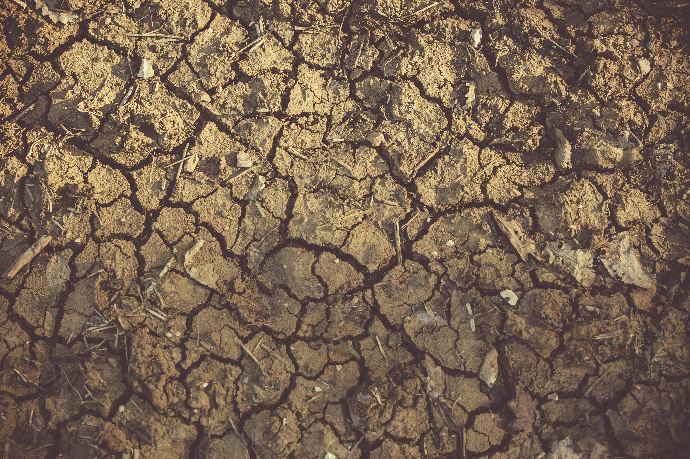

Problemas Ambientales Actuales
Incendios forestales
Los incendios forestales destruyen vastas áreas de bosques cada año.
.jpg)
Áreas afectadas: En 2020, los incendios forestales en Brasil, Australia y California afectaron millones de hectáreas. Los incendios en la Patagonia argentina han sido un problema recurrente y devastador. En los últimos años, se han registrado varios incendios significativos que han afectado miles de hectáreas de bosques y han obligado a evacuar a numerosas familias. Estos incendios no solo destruyen la vegetación, sino que también afectan la calidad del suelo, dejándolo vulnerable a la erosión y dificultando su recuperación natural.
Emisiones de CO2: Los incendios forestales contribuyen significativamente a las emisiones de dióxido de carbono, exacerbando el cambio climático.
Desertificación de suelos
La desertificación convierte tierras fértiles en áridas.
Superficie afectada: Aproximadamente el 12% de la superficie terrestre del mundo está afectada por la desertificación.
Pérdida de tierras agrícolas: Se estima que la desertificación afecta a más de 250 millones de personas en 100 países, con una pérdida de 12 millones de hectáreas de tierras agrícolas cada año.
Contaminación industrial
La contaminación industrial afecta el aire, el agua y el suelo.

Emisiones de contaminantes: Las industrias son responsables de aproximadamente el 21% de las emisiones de gases de efecto invernadero.
Impacto en la salud: La contaminación industrial contribuye a enfermedades respiratorias y cardiovasculares, afectando a millones de personas en todo el mundo.